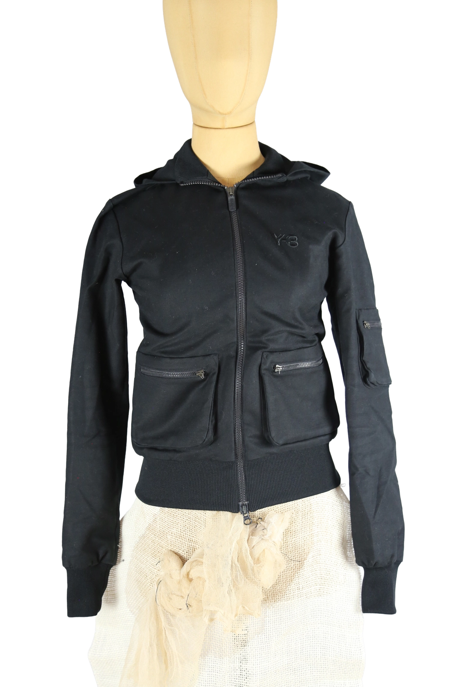

1 / 14Aus dem kuratierten Archiv von Disorder119. Schwarz gehaltener Zip-Hoodie aus der frühen Y-3 Phase von Yohji Yamamoto und adidas, datiert auf das Jahr 2005. Die Jacke verbindet sportliche Funktionalität mit einer klaren, reduzierten Silhouette, wie sie für die frühen Kollektionen der Linie typisch ist. Das matte, leicht elastische Material wirkt technisch und zugleich weich. Der Schnitt ist körpernah, ohne einzuengen. Frontreißverschluss, angesetzte Kapuze sowie zwei aufgesetzte Fronttaschen mit Reißverschluss prägen die Vorderseite. Am Ärmel befindet sich eine zusätzliche Utility-Tasche. Dezentes Y-3 Logo auf der Brust, elastische Rippabschlüsse an Saum und Bündchen. Ein funktionales, zeitloses Archiv-Piece aus der Anfangsphase von Y-3. Details: Marke: Y-3 (Yohji Yamamoto x adidas) Farbe: Schwarz Größe: XS Passform: schmal geschnitten Verschluss: Reißverschluss Material: Obermaterial 95 % Baumwolle, 5 % Elasthan; Futter 100 % Polyester Herstellungsland: China Kollektion/Jahr: 2005 Fotografie & Passform: Das Kleidungsstück wurde auf unserer Standard-Schneiderpuppe fotografiert, die wir zur konsistenten Darstellung aller Kleidungsstücke verwenden. Maße der Schneiderpuppe: Brustumfang 89 cm Taillenumfang 66 cm Hüftumfang 89 cm Schulterbreite 38 cm Diese Maße dienen ausschließlich der visuellen Einordnung und werden nicht als Artikelmaße bezeichnet. Zustand: Gebraucht. Die beiden Gummizug-Elemente am vorderen Reißverschluss fehlen. Ansonsten altersübliche, leichte Tragespuren. Rechtliche Hinweise: Verkauf als gebrauchtes Kleidungsstück. Die Beschreibung erfolgt nach bestem Wissen und Gewissen. Farbnuancen und Oberflächenwirkungen können aufgrund von Lichtverhältnissen bei der Fotografie sowie unterschiedlicher Bildschirmdarstellungen leicht vom Original abweichen. Disorder119 steht für sorgfältig kuratierte Designerstücke mit Fokus auf Authentizität, Qualität und zeitlose Relevanz.
Disorder119 · Kuratiertes Archiv für Designer-, Vintage- und Contemporary-Mode. Jedes Stück wird einzeln ausgewählt, fotografiert und beschrieben.